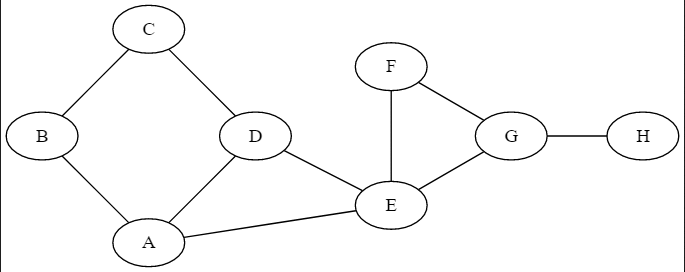

Algorithmes de parcours de Graphes⚓︎
On pourra utiliser un éditeur de graphes pour se simplifier la représentation en utilisant l'outil en ligne Graphviz Editor
Parcours en largeur d'abord (Breadth First Search - BFS)⚓︎
Le principe du parcoursen largeur d'abord est de choisir un sommet et de parcourir les noeuds en listant les noeuds de même profondeur par rapport au noeud de départ. 
- On démarre au noeud B. On explore ses fils, puis les fils de ses fils, sans revenir sur les noeuds déjà traités. ce qui donne sur l'animation ci-dessus : B, A, C, D, E, F, G, H.
Remarque
Le "premier" ou "deuxieme" fils sera déterminé par la façon dont le graphe a été implémenté. En effet, on pour déterminer le parcours comme B, C, A, D, F, G, F et H.
à partir d'autres noeuds
Développer l'algorithme en partant des noeuds H puis D.
Etapes de la procédure
On crée une file vide
- On enfile le nœud de départ.
- On enfile les nœuds adjacents s'ils ne sont pas déjà présents dans la file et qu'ils n'ont pas déjà été visités (on créera une liste pour y stocker les noeuds visités)
- On défile (c'est-à-dire on supprime la tête de file).
- Tant que la file n'est pas vide, on ré-itère les points 2 et 3.
- On affiche la liste des noeuds visités
Procédure détaillée
- On place les fils A et C en file d'attente.
file_attente=[A,C]puis on considère que le noeud B a été traité, on le mémorisenoeuds_traités=[B]. - On prend le premier élément en file d'attente (A) et on l'explore, c'est-à-dire que l'on met ses fils en file d'attente et que l'on mémorise le noeud comme traité. Il sort donc de la file d'attente :
file_attente=[C,D,E]etnoeuds_traités=[B,A]. - Même procédure avec le noeud C qui est le suivant dans la file d'attente, on traite C il sort de la file et entre dans les noeuds traités et son fils est placé en file d'attente : le seul fils de C est déjà en file d'attente donc on ne l'ajoute pas :
file_attente=[D,E]etnoeuds_traités=[B,A,C]. - On traite le noeud D : E est déjà en file d'attente:
file_attente=[E]etnoeuds_traités=[B,A,C,D]. - Les fils du noeuds E sont placés en fils d'attente et E est déplacé de la file d'attente à la liste des noeuds traités :
file_attente=[F,G]etnoeuds_traités=[B,A,C,D,E]. - Noeud F : ses fils sont soit déjà traité soit en fils d'attente
file_attente=[G]etnoeuds_traités=[B,A,C,D,E,F]. - Noeud G :
file_attente=[H]etnoeuds_traités=[B,A,C,D,E,F,G]. - Noeud H :
file_attente=[]etnoeuds_traités=[B,A,C,D,E,F,G,H]
Tous les noeuds ont été créés (on peut tester la taille de la liste avec une assertion pour être sûr) et la file d'attente est vide, le parcours s'arrête.
à partir d'autres noeuds
Développer l'algorithme en partant des noeuds H puis D.
L'algorithme en pseudocode :
1 2 3 4 5 6 7 8 9 10 11 12 13 14 15 16 17 18 19 20 21 | |
Parcours en profondeur d'abord (Deep First Search - DFS)⚓︎
Pour ce parcours, on explore les voisins du noeuds de départ un par un et on explore les voisins du premier voisin, puis ceux du deuxième, ...
On démarre au noeud B, on explore son premier fils (A) et on met les autres en attente (C). On explore le premier fils de A (E) et on met l'autre (D) en attente. Le premier fils de E (G) est exploré alors que G est en mis en attente. Puis, on explore H. Une fois arrivé à un noeud qui n'a plus de fils non traités ou mis en attente, on remonte visiter les noeuds mis en attente. Ce qui donne : B, A, E, G, H, F, D, C.
Remarque
Le "premier" ou "deuxieme" fils sera déterminé par la façon dont le graphe a été implémenté. Le résultat du parcours peut être différent.
Etapes de la procédure
- On part d'un sommet que l'on empile;
- On dépile et on marque le sommet dépilé comme traité (il faudrait créer une liste pour les sommets déjà traités)
- On empile chacun des voisins du sommet dépilé qui ne sont pas déjà dans la pile et qui n'ont pas été déjà été traités;
- On recommence à partir du point 2 tant que la pile n'est pas vide.
Détails de la procédure
Ici, la file d'attente est une pile et non une file. Donc c'est le dernier élément mis en attente qui sera traité en premier.
- Le noeud B est visité en premier noeuds_traités=[B]. On viste A noeuds_traités=[B,A] et on place C en pile d'attente : pile_attente=[C].
- On visite E et on met D en attente : noeuds_traités=[B,A,E] et pile_attente=[C,D].
- On viste G et on met F en attente : noeuds_traités=[B,A,E,G] et pile_attente=[C,D,F].
- On viste H qui n'a pas de fils non traité et non en attente : noeuds_traités=[B,A,E,G,H] et pile_attente=[C,D,F].
- On dépile la pile d'attente et on visite F noeuds_traités=[B,A,E,G,H,F] et pile_attente=[C,D].
- puis D noeuds_traités=[B,A,E,G,H,F,D] et pile_attente=[C].
- et enfin C : noeuds_traités=[B,A,E,G,H,F,D,C] et pile_attente=[].
- la pile d'attente est vide et on a visité tous les noeuds.
à partir d'autres noeuds
Développer l'algorithme en partant des noeuds H puis D.
L'algorithme itéraif en pseudocode
On peut utiliser la coloration des noeuds : blanc pour non visité et noir pour visité. Mais on peut également mettre les éléments visités dans une liste.
1 2 3 4 5 6 7 8 9 10 11 12 13 14 15 16 17 18 19 20 | |
L'algorithme récursif en pseudocode
1 2 3 4 5 6 7 8 9 10 11 12 13 14 | |
Chercher son chemin⚓︎
Chercher son chemin dans un graphe c'est parcourir le graphe en mémorisant les noeuds par lesquels on passe, en s'arrêtant dès que l'on a rencontré le noeud d'arrivée.
algorithme
1 2 3 4 5 6 7 8 9 10 11 12 13 14 15 16 | |
Chercher tous les chemins⚓︎
Le principe est le même que précédemment mais on ne s'arrête pas dès que le noeud est rencontré. On mémorise le chemin et on continue de parcourir le graphe de façon à rencontrer encore le noeud d'arrivée. On place les chemins trouvés dans une liste et on retourne cette liste.
algorithme
1 2 3 4 5 6 7 8 9 10 11 12 13 14 15 16 17 18 | |
Remarque
Le chemin le plus court sera celui contenant le moins de noeuds rencontrés.
Détection de cycle⚓︎
Un cycle dans un graphe est un chemin dont le neoud de départ et le noeud d'arrivée sont identique. le principe étant de ne JAMAIS faire demi tour donc de ne pas revenir sur des noeuds déjà visités.
Si on veut chercher tous les cycles à partir d'un sommet on applique l'algorithme de recherche de tous les chemins. Et si on veut tous les ycles du graphe, on appique ce dernier à tous les sommets.
algorithme
1 2 3 4 5 6 7 8 9 10 | |
Application : algorithme de Dijkstra (hors programme)⚓︎
 On affecte la marque \(\infty\) à tous les sommets non visités. Le sommet de départ est affecté de la marque 0.
On affecte la marque \(\infty\) à tous les sommets non visités. Le sommet de départ est affecté de la marque 0.
| 1 | 2 | 3 | 4 | 5 | 6 |
|---|---|---|---|---|---|
| 0 (1) | \(\infty\) | \(\infty\) | \(\infty\) | \(\infty\) | \(\infty\) |
Pour chaque voisin non visité du sommet courant (ici 1), on regarde la distance à laquelle il se trouve et on ajoute dans le tableau la distance obtenue et le parent qui permet d'obtenir cette distance.
Par exemple, ici, pour aller au sommet 2 du sommet 1 la distance est de 7. On affecte la marque 7 au sommet 2 en précisant que l'on vient du sommet 1.
| 1 | 2 | 3 | 4 | 5 | 6 |
|---|---|---|---|---|---|
| 0 (1) | \(\infty\) | \(\infty\) | \(\infty\) | \(\infty\) | \(\infty\) |
| - | 7 (1) | 9 (1) | \(\infty\) | \(\infty\) | 14 (1) |
Un sommet est considéré comme traité quand tous ses successeurs ont été visités. A ce stade, on considère le sommet 1 comme traité.
Le minimum obtenu à partir du sommet 1 est le sommet 2, on va donc chercher les successeurs de 2. On peut aller à 3 et à 4 mais pas 1 car il est déjà traité.
A partir de 2, on atteint le noeud 3 avec un total de 17, ce qui est inférieur à 9 lamarque précédente de 3. On ne modifie pas la marque de 3. Pour atteindre 4, on parcourt une distance totale de 22.
| 1 | 2 | 3 | 4 | 5 | 6 |
|---|---|---|---|---|---|
| 0 (1) | \(\infty\) | \(\infty\) | \(\infty\) | \(\infty\) | \(\infty\) |
| - | 7 (1) | 9 (1) | \(\infty\) | \(\infty\) | 14 (1) |
| - | - | 9 (1) | 22 (2) | \(\infty\) | 14 (1) |
Le noeud 2 est considéré comme visité. On s'interesse au noeud visité ayant la marque la plus petite à savoir le noeud 3.
A partir du noeud 3, on visite 4 et 6. On atteint le noeud 4 avec une distance de 22 et le noeud 6 avec une distance de 11. On voit qu'on améliore la marque pour 6 et pour 4.
| 1 | 2 | 3 | 4 | 5 | 6 |
|---|---|---|---|---|---|
| 0 (1) | \(\infty\) | \(\infty\) | \(\infty\) | \(\infty\) | \(\infty\) |
| - | 7 (1) | 9 (1) | \(\infty\) | \(\infty\) | 14 (1) |
| - | - | 9 (1) | 22 (2) | \(\infty\) | 14 (1) |
| - | - | - | 20 (3) | \(\infty\) | 11 (3) |
Le noeud 3 est considéré comme visité.
On s'interesse au noeud 6 car c'est celui ayant la plus petite marque. On visite alors ses successeurs à savoir le noeud 5 car le 3 et le 1 sont dajà visités.
| 1 | 2 | 3 | 4 | 5 | 6 |
|---|---|---|---|---|---|
| 0 (1) | \(\infty\) | \(\infty\) | \(\infty\) | \(\infty\) | \(\infty\) |
| - | 7 (1) | 9 (1) | \(\infty\) | \(\infty\) | 14 (1) |
| - | - | 9 (1) | 22 (2) | \(\infty\) | 14 (1) |
| - | - | - | 20 (3) | \(\infty\) | 11 (3) |
| - | - | - | 20 (3) | 20 (6) | - |
On a atteind ici le noeud d'arrivée (le 5) donc il faut maintenant remonter le tableau pour déterminer l'itinéraire. On vient du noeud 6, la dernière marque duu noeud 6 venait du noeud 3 et la dernière du noeud 3 venait du noeud 1. L'itinéraire le plus court pour joindre 5 à partir de 1 est donc 1, 3, 6, 5.
Les étapes de la procédure
- Créer un tableau donc la premiere ligne contient tous les noeuds à qui on affecte la valeur infini.
- Initialiser une liste de noeuds visités.
- Pour le noeud de départ, affecter le tuple (ou autre) (0,D) où D est le noeud de départ.
- Pour chaque successeur de D qui n'est pas dans la liste des noeuds visités, affecter au noeud le tuple (distance,D) ou distance est la somme de la distance entre D et son successeur et de la distance déjà affectée à D.
- Ajouter D dans les noeuds visités.
- Choisir le noeud possédant la distance la plus petite, et répéter les opérations à partir de l'étape 4 jusqu'à ce que le noeud trouvé soit le noeud d'arrivée.
- Remonter l'itinéaire en cherchant le noeud parent du noeud sélectionné, puis le parent du parent ...